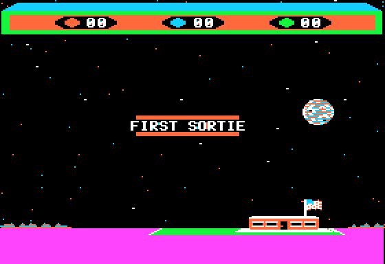

<meta charset="utf-8">
<meta name="viewport" content="width=device-width, initial-scale=1">
<title>Choplifter</title>
<link rel="preconnect" href="https://fonts.googleapis.com">
<link rel="stylesheet" href="https://fonts.googleapis.com/css2?family=Lato:wght@400;700;900&family=IBM+Plex+Mono:wght@400;500&display=swap">
<style>
:root{
  --bg:#23262d; --paper:#e9e7e1; --surface:#ffffff; --surface-2:#f1efea; --line:#d5d3cc; --line-soft:#e0ded8;
  --ink:#2f3136; --ink-soft:#55585f; --ink-mute:#80838a;
  --link:#1f5fa8; --link-hover:#154480; --accent:#1f5fa8;
  --amber:#c25a00; --cyan:#1f5fa8; --coral:#d04a3a; --green:#2a8a4a; --violet:#4a5bd6; --hl:#fff0c2;
  --chip:#2f3136; --chip-ink:#ffffff;
  --c64blue:#40318d; --c64grey:#686868;
  --fd:'Lato',system-ui,sans-serif; --fb:'Lato',system-ui,sans-serif; --fm:'IBM Plex Mono',ui-monospace,Menlo,monospace;
  --col:1080px; --gx:68px; --fs:17px; --lh:1.6; --hw:900; --h1:46px; --h2:26px; --sy:48px; --pp:26px; --r:10px;
  --plate-shadow:0 1px 2px rgba(0,0,0,.05),0 4px 14px rgba(0,0,0,.05);
}
*{box-sizing:border-box}
html{background:var(--bg);min-height:100%}
body{background:var(--paper);color:var(--ink);font-family:var(--fb);font-size:var(--fs);line-height:var(--lh);max-width:var(--col);margin:0 auto;min-height:100vh;padding:0 0 4rem}
h1,h2,h3{font-weight:var(--hw);letter-spacing:-.01em;text-wrap:balance;color:var(--ink);margin:0}
.wrap{padding:0 var(--gx)}
.hero{padding:48px var(--gx) 8px;text-align:left}
.eyebrow{font-family:var(--fm);font-size:12px;letter-spacing:.08em;text-transform:uppercase;color:var(--ink-mute);margin:0 0 10px}
.hero h1{font-size:var(--h1);line-height:1.15;letter-spacing:-.02em;margin:0 0 14px}
.hero .sub{margin:0 0 .6em;color:var(--ink-soft)}
section{padding:var(--sy) 0 24px}
section:last-of-type{border-bottom:none}
.fig{font-family:var(--fm);font-size:12px;letter-spacing:.08em;text-transform:uppercase;color:var(--ink-mute);margin:0 0 10px}
h2.t{font-size:var(--h2);margin-bottom:12px}
.lede{color:var(--ink-soft);margin:0 0 30px}
.plate{background:var(--surface);border:1px solid var(--line);border-radius:var(--r);padding:var(--pp);box-shadow:var(--plate-shadow)}
.cap{font-size:14px;color:var(--ink-mute);margin-top:14px;line-height:1.55}
.cap b{color:var(--ink);font-weight:700}
code{font-family:var(--fm);font-size:.82em;background:var(--chip);color:var(--chip-ink);border-radius:4px;padding:2px 6px;white-space:nowrap}

.cd-bar{display:flex;flex-wrap:wrap;gap:8px;align-items:center;margin:0 0 12px}
.cd-bar label{font-size:13px;color:var(--ink-soft);display:flex;gap:6px;align-items:center;flex:1;min-width:240px}
.cd-bar input[type=range]{flex:1}
.cd-out{font-family:var(--fm);font-size:13px;color:var(--ink);margin:10px 0 0;line-height:1.7}
.cd-out b.bad{color:var(--coral)}
.cd-out b.ok{color:var(--green)}
.cd-strip{width:100%;display:block;border-radius:4px;background:#111}
.cd-bytes{font-family:var(--fm);font-size:13px;display:flex;flex-wrap:wrap;gap:4px;margin:8px 0}
.cd-bytes span{background:var(--surface-2);border:1px solid var(--line);border-radius:3px;padding:1px 5px}
.cd-bytes span.on{background:var(--hl);border-color:var(--amber)}
.cd-sound{background:#111;border-radius:6px;padding:8px 10px;color:#ddd}
.cd-pair{display:grid;grid-template-columns:1fr 1fr;gap:18px;align-items:start}
.cd-pair img{width:100%;display:block;border-radius:4px;image-rendering:pixelated;background:#000}
.cd-err{color:var(--coral);font-size:14px}
@media (max-width:760px){:root{--gx:16px;--pp:14px}.cd-pair{grid-template-columns:1fr}}
</style>
<!-- tabs -->
<header class="hero">
  <p class="eyebrow">1982 · Broderbund Software · Apple II</p>
  <h1>Choplifter</h1>
  <p class="sub">What the code does that the game never tells the player.</p>
</header>
<main class="wrap">

<section id="tanks">
  <p class="fig">01 · The tanks</p>
  <h2 class="t">Bug: tanks meant for the helicopter's right are put at the far end of the world</h2>
  <p class="lede">A tank is meant to appear 432 dots to one side of the helicopter: ahead of it when it flies fast, otherwise on either side at random. Every tank meant for the right side lands at the far left end of the world instead, and the tank's own routine then deletes it as too far away. So tanks almost always come from the left.</p>
  <div class="plate">
    <div class="cd-bar"><label>The helicopter's world X <input type="range" id="tk-x" min="720" max="4095" value="1794"></label></div>
    <canvas id="tk-cv" class="cd-strip" width="900" height="120"></canvas>
    <p class="cd-out" id="tk-out"></p>
    <p class="cap">The right-hand branch of <code>spawn_tank</code> (<code>$6434</code>) adds $01B0 to the helicopter's X, and then the LDA #$00 at <code>$6440</code> replaces the high byte it has just worked out; the 0 is stored as the gun's aim and as the high byte, so the tank's X is the low byte alone, $0000-$00FF. The tank's routine drops any tank whose distance from the helicopter has a high byte from 3 to $FC (<code>$666A</code>-<code>$667A</code>). The slider runs over every X at which a tank can come, up to two blocks of 256 dots short of the fence. <b>For every one of those 3,376 positions, the arithmetic here gives the same X and the same verdict as the game's own code run on the listing's bytes</b> (<code>test_tank.js</code>). In Apple2TS, with the helicopter held at $0702 for 3,000 frames, one tank came, on the left, and two meant for the right never entered the tank list.</p>
  </div>
  <p>There is one place where a right-hand tank survives: with the helicopter in the first 128 dots of the world it can reach, $02D0-$034F, the slipped tank lands less than three blocks away and drives in from the left like any other.</p>
  <p>The <a href="../../c64/choplifter/index.html">Commodore 64 version</a> has the same slip in its own code ($9F54 there): it adds $B0 to the low byte, stores 0 as the high byte, and deletes the tank on its first update.</p>
</section>

<section id="noise">
  <p class="fig">02 · The noise</p>
  <h2 class="t">The sound of a tank or a jet firing is the jet's own code</h2>
  <p class="lede">The game has no table of random numbers for its noise. <code>noise</code> (<code>$76CD</code>) clicks the speaker in pairs, and waits before the first click of each pair for as many turns of a delay loop as a byte of memory says, from <code>$8100</code> + Y down to <code>$8101</code>. Those bytes are the jet's code: the instructions that close a jet's height on the helicopter's.</p>
  <div class="plate">
    <div class="cd-sound" id="nz"><span class="cd-err" id="nz-msg">Loading the listing…</span></div>
    <div class="cd-bytes" id="nz-bytes"></div>
    <p class="cap">The bytes at <code>$8101</code>-<code>$8120</code>, from the listing, each the delay before one pair of clicks; a tank's shot plays the first 10, a jet's missiles all 32, from the last back to the first. The two effects run the game's code for them on the kit's 6502, as on the How it works page, and the clicks match the game's in Apple2TS click for click (<code>test_sound.js</code>).</p>
  </div>
</section>

<section id="level">
  <p class="fig">03 · The level</p>
  <h2 class="t">Secret: CTRL-L, then a number, picks the level</h2>
  <p>The level, 0 to 3, sets how many tanks, jets and drones may be in play, how many jets are bold, and whether drones drop shells (<a href="index.html">How it works</a>). It normally goes up by one for each trip that brings hostages home. CTRL-L, then any key, sets it to the key's low two bits (<code>read_keys</code>, <code>$0DED</code>), so CTRL-L then 3 starts the hardest level at once. In Apple2TS, CTRL-L then 3 set the level byte (<code>$731D</code>) to 3. A new game puts it back to 0 (<code>refill</code>, <code>$9A47</code>), so the keys have to be pressed during play.</p>
</section>

<section id="loading">
  <p class="fig">04 · The screen</p>
  <h2 class="t">The ground and the counters' bar are the loading screen</h2>
  <div class="plate">
    <div class="cd-pair">
      
      
    </div>
    <p class="cap">The title and the first sortie, Apple2TS. The bar at the top and the violet ground band are the same bytes throughout: the disk loads them into both screen pages as part of the title picture.</p>
  </div>
  <p>The game never draws its ground band. The loader puts the title picture into both hi-res pages, ground and all, and erasing keeps the ground intact by filling every box below the ground line with the ground's pattern, $55 $2A. A routine that would build the whole screen from nothing, clearing both pages, drawing the bar and filling the ground, is in memory at <code>$9ADD</code> and is never called. That is why the demonstration on the How it works page has to start from the loading screen.</p>
</section>

<section id="same">
  <p class="fig">05 · The demonstration</p>
  <h2 class="t">The demonstration flight is the same every time the disk boots</h2>
  <p>The random number generator's one byte (<code>$76</code>) is seeded at start-up with whatever the A register holds (<code>start</code>, <code>$0800</code>). The loader jumps to the game straight after checking the sum of everything it loaded, and that sum must be $31, so A is always $31. The demonstration reads no clock, and while no key is pressed it unfolds the same way on every boot: the How it works page runs it from the listing and its frames match Apple2TS's byte for byte. A game becomes different only through the moment a key starts it.</p>
</section>

<section id="iie">
  <p class="fig">06 · The machine</p>
  <h2 class="t">The disk stops with an M on an enhanced Apple IIe</h2>
  <p>While it loads, the loader compares stretches of the Monitor ROM with copies it carries, one set for the original Apple II and one for the Autostart ROM of the II Plus, and stops with a lone <code>M</code> on any difference. The enhanced IIe's Monitor differs at $FB51, where it makes room for 80 columns, so this original disk runs on the Apple II and the II Plus only. In Apple2TS as an enhanced IIe the disk stopped there; as a II Plus it played.</p>
</section>

<section id="leftovers">
  <p class="fig">07 · Memory</p>
  <h2 class="t">Pieces in memory the game never uses</h2>
  <ul>
    <li><code>$0F22</code>-<code>$0FFF</code>: 222 bytes of another program, left in memory when the page was saved to the disk: a page copier and a prompt that reads a line through the Monitor and asks for Y or N.</li>
    <li><code>$68E5</code>-<code>$6BFF</code>, <code>$6FD5</code>-<code>$6FFF</code>, <code>$7FC2</code>-<code>$7FFF</code> and <code>$8E01</code>-<code>$8FFF</code>: pieces of a hi-res screen, laid out like its lines, from the memory the pages were saved from.</li>
    <li><code>$9F79</code>-<code>$9FD4</code>: an older copy of the table at <code>$6F79</code>.</li>
    <li>Three routines that nothing calls: <code>build_screen</code> (<code>$9ADD</code>), a multiply (<code>$16C2</code>), and a drawing mode that reports the first lit dot a shape lands on (<code>$102D</code>), which the game never uses.</li>
    <li>One star is stored twice: two of the 77 fixed places the stars are written to are the same byte, $2427, so 76 places show stars.</li>
  </ul>
</section>
</main>
<footer style="margin:16px 0 0;padding:22px var(--gx) 0;border-top:1px solid #e0ded8;font-family:'IBM Plex Mono',ui-monospace,Menlo,monospace;font-size:12px;color:#80838a"><a href="https://github.com/gamesexplained/gamesexplained" style="color:#1f5fa8;text-decoration:none">GitHub</a> · <a href="https://discord.gg/3V9GWyRDWV" style="color:#1f5fa8;text-decoration:none">Discord</a><br>© Games Explained contributors. Write-ups, facts and symbol maps are available under <a href="https://creativecommons.org/licenses/by-sa/4.0/" style="color:#1f5fa8;text-decoration:none">CC BY-SA 4.0</a>; code under <a href="https://opensource.org/licenses/MIT" style="color:#1f5fa8;text-decoration:none">MIT</a></footer>
<script src="../../lib/cpu6502.js"></script>
<script src="../../lib/apple2.js"></script>
<script src="../../lib/apple2-speaker.js"></script>
<script src="reference/sound.js"></script>
<script>
/* tank.js */
// The right-hand tank's slip and the tank's distance test, for the slider above. test_tank.js holds
// each to the game's own code for every X at which the helicopter can call for a tank.
const ChopTank = {
  meant: h => h + 0x1B0,                         // 432 dots right of the helicopter
  right: h => (h + 0xB0) & 0xFF,                 // $6434-$6447: the low byte of h + $1B0, and 0 as the high byte
  left: h => (h - 0x1B0) & 0xFFFF,               // $641D-$642A: 432 dots left, both bytes
  // $6653-$667A: the distance's high byte; 3 to $FC and the tank is dropped
  kept: (h, t) => { const hi = ((h - t) >> 8) & 0xFF; return hi < 3 || hi > 0xFC; },
};
// end of tank.js
</script>
<script>
(async function () {
  const $ = id => document.getElementById(id);
  const hex = (v, n = 4) => '$' + v.toString(16).toUpperCase().padStart(n, '0');

  // --- 01: the tank's slip ---------------------------------------------------------------------
  const cv = $('tk-cv'), g = cv.getContext('2d');
  const W = cv.width, H = cv.height, END = 0x1300, X = v => 10 + v / END * (W - 20);
  const marks = [[0x0380, 'barracks'], [0x0480, ''], [0x0580, ''], [0x0680, ''], [0x1174, 'fence'], [0x1274, 'base']];
  function drawTank() {
    const h = +$('tk-x').value, meant = ChopTank.meant(h), put = ChopTank.right(h), kept = ChopTank.kept(h, put);
    g.fillStyle = '#111'; g.fillRect(0, 0, W, H);
    g.fillStyle = '#2a2a2a'; g.fillRect(X(0x02D0), 70, X(0x1300) - X(0x02D0), 30);
    g.font = '11px IBM Plex Mono, monospace'; g.textAlign = 'center';
    for (const [x, n] of marks) { g.fillStyle = '#777'; g.fillRect(X(x), 64, 2, 36); if (n) g.fillText(n, X(x), 112); }
    g.fillStyle = '#ccc'; g.fillText('the helicopter\'s range', X(0x0A00), 92);
    const pin = (x, colour, label, y) => {
      g.fillStyle = colour; g.fillRect(X(x) - 1, y, 3, 60 - y); g.beginPath(); g.arc(X(x), y, 5, 0, 7); g.fill();
      g.fillText(label, Math.min(W - 60, Math.max(60, X(x))), y - 9);
    };
    pin(h, '#fff', 'helicopter', 26);
    if (meant <= END) pin(meant, '#4caf50', 'meant', 46);
    pin(put, kept ? '#e8a33d' : '#e05545', kept ? 'put here, kept' : 'put here, dropped', 46);
    const d = (h - put) & 0xFFFF;
    $('tk-out').innerHTML = `helicopter at ${hex(h)} · meant for ${hex(meant)} · put at ${hex(put)} · distance ${hex(d)}, high byte ${hex(d >> 8, 2)} → ` +
      (kept ? '<b class="ok">kept: it drives in from the left</b>' : '<b class="bad">dropped at once</b>') +
      `<br>the left-hand tank, for comparison: at ${hex(ChopTank.left(h))}, kept`;
  }
  $('tk-x').oninput = drawTank; drawTank();

  // --- 02: the noise ---------------------------------------------------------------------------
  const ready = globalThis.C64Cpu && globalThis.Apple2 && globalThis.Apple2Speaker && globalThis.ChopSound;
  if (!ready) { $('nz-msg').textContent = 'This widget needs the built site.'; return; }
  let L;
  try { L = await Apple2.load('listing.json'); } catch (e) { $('nz-msg').textContent = 'The listing did not load: ' + e.message; return; }
  const bytes = $('nz-bytes');
  for (let i = 1; i <= 32; i++) {
    const s = document.createElement('span'); s.textContent = L.ram[0x8100 + i].toString(16).toUpperCase().padStart(2, '0');
    s.title = hex(0x8100 + i) + ': a delay of ' + L.ram[0x8100 + i] + ' turns'; if (i <= 10) s.className = 'on';
    bytes.appendChild(s);
  }
  $('nz').innerHTML = '';
  const pick = ['Tank fires', 'Jet fires'].map(n => ChopSound.EFFECTS.findIndex(e => e.name === n));
  Apple2Speaker.mount($('nz'), { tunes: pick.map(k => ({ name: ChopSound.EFFECTS[k].name, log: ChopSound.log(L, k) })) });
})();
</script>
